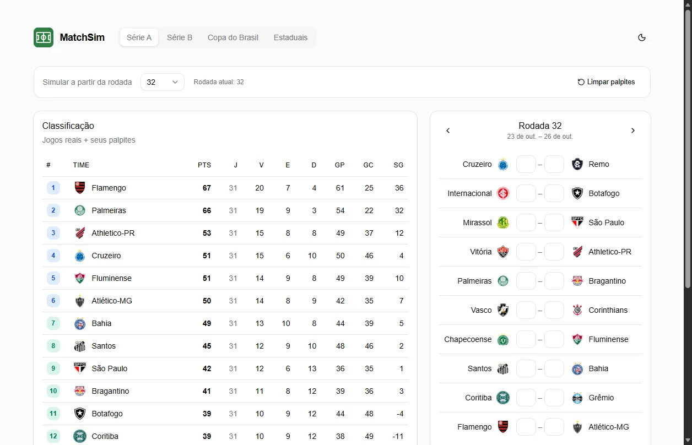
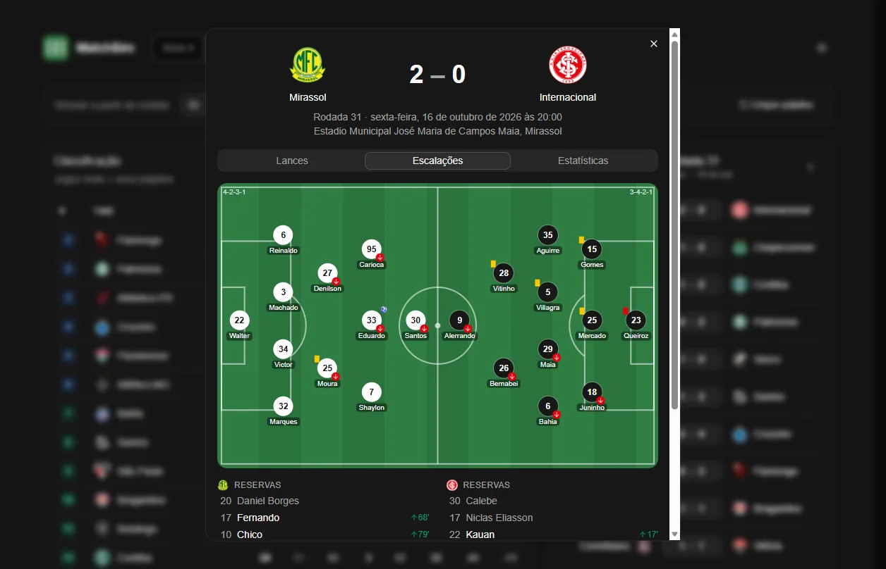
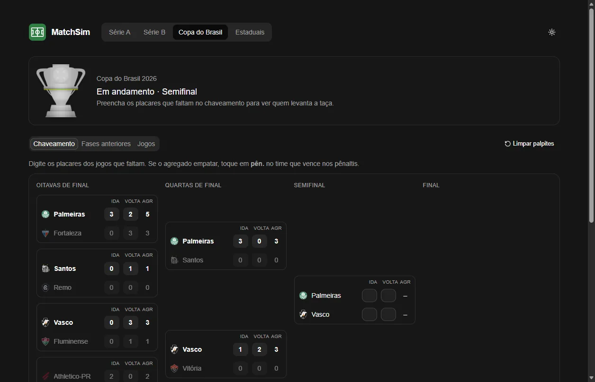
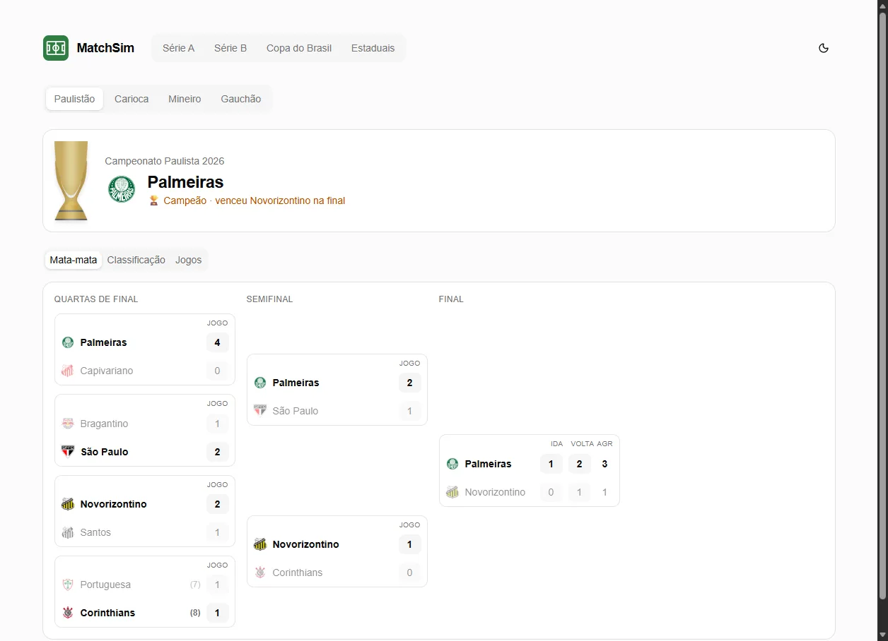
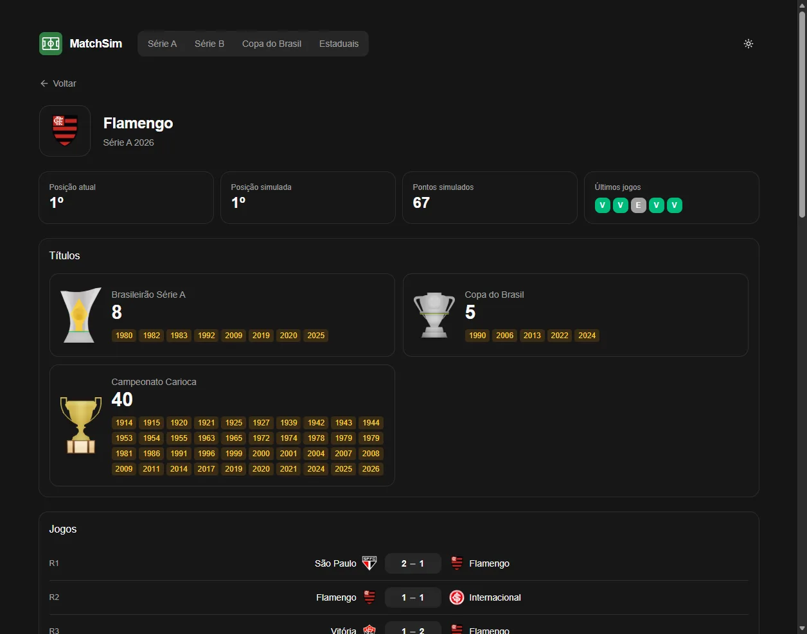

MatchSim
MatchSim
Simulador do futebol brasileiro: parta da tabela real e escreva o resto da temporada.Brazilian football simulator: start from the real table and write the rest of the season.


 0
0

O que fazWhat it does
- Série A e Série B: escolha a rodada, digite os placares e veja a tabela recalcular na hora, com ▲▼ de posições ganhas ou perdidas.
- Série A and B: pick the round, type the scores and watch the table recalculate, with ▲▼ for positions gained or lost.
- Copa do Brasil: chaveamento com ida, volta, agregado e pênaltis.
- Copa do Brasil: bracket with home and away legs, aggregate and penalties.
- Estaduais: Paulistão, Carioca, Mineiro e Gauchão, com grupos e mata-mata.
- State leagues: Paulistão, Carioca, Mineiro and Gauchão, with groups and knockouts.
- Detalhes da partida: gols, cartões, estatísticas e a escalação tática num campinho.
- Match details: goals, cards, stats and the tactical lineup on a pitch.
- Perfil do time com a sala de troféus.
- Team profile with the trophy room.
Como funcionaHow it works
A ESPN não informa o número da rodada, então o servidor reconstrói as rodadas pelas datas, incluindo jogos adiados. Na Série A 2026 o resultado bate com as rodadas oficiais.ESPN doesn't provide round numbers, so the server rebuilds rounds from match dates, postponed games included. For Série A 2026 the result matches the official rounds.
Projeto educacional. Os dados vêm da API pública (não oficial) da ESPN. Sem relação com a ESPN, a CBF ou os clubes.Educational project. Data comes from ESPN's public (unofficial) API. Not affiliated with ESPN, CBF or the clubs.
Como rodarRun it
git clone https://github.com/SamuelSchutz13/Match-Sim.git matchsim cd matchsim # terminal 1: API (http://localhost:3001)# terminal 1: API (http://localhost:3001) cd server npm install npm run dev # terminal 2: site (http://localhost:5173)# terminal 2: website (http://localhost:5173) cd web npm install npm run dev
ImagensImages



